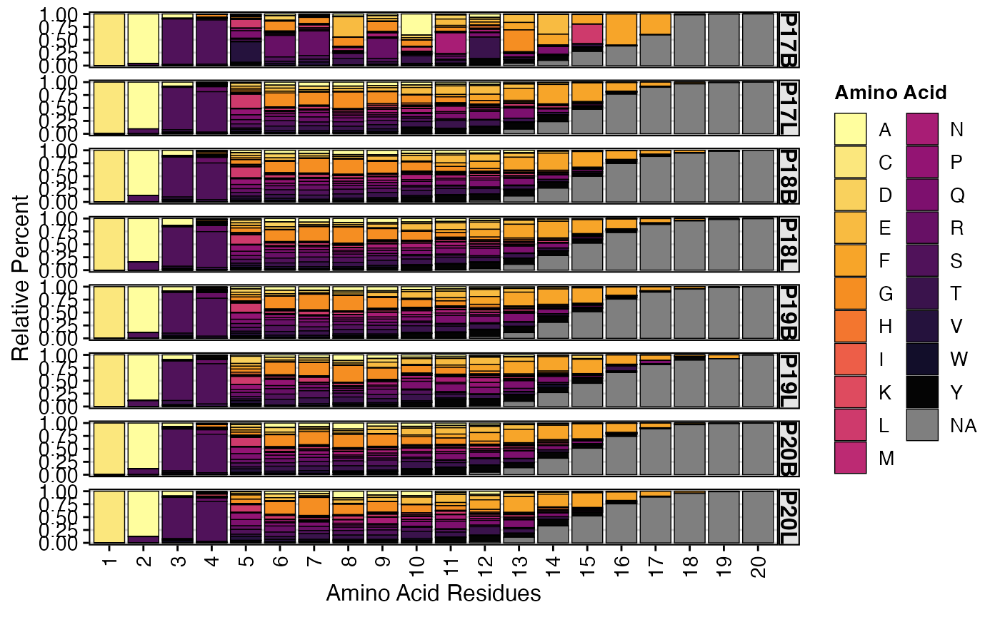
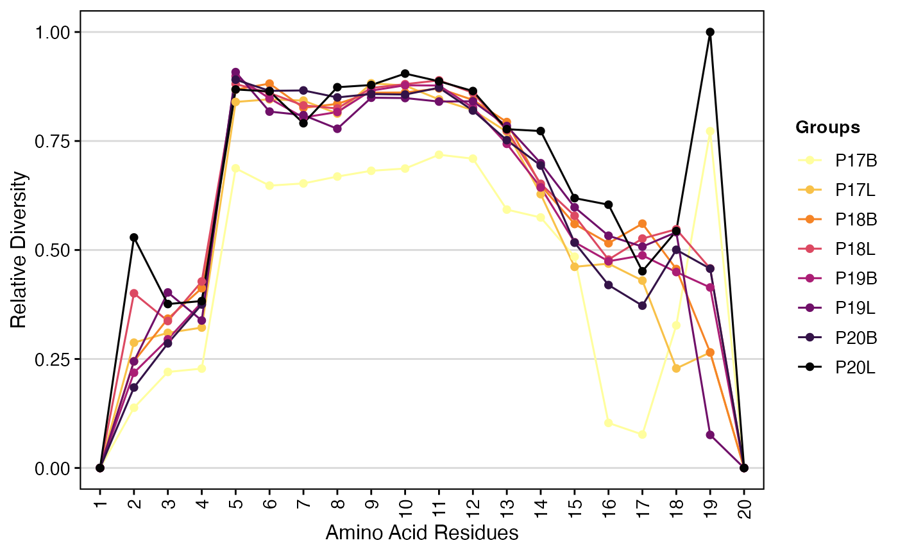
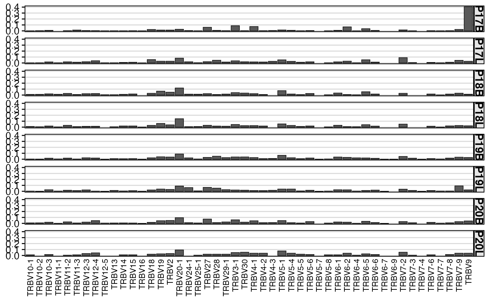
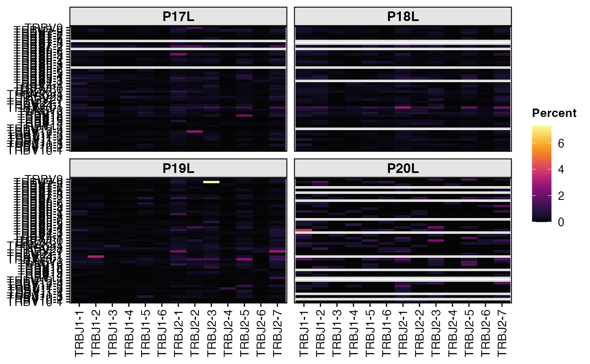
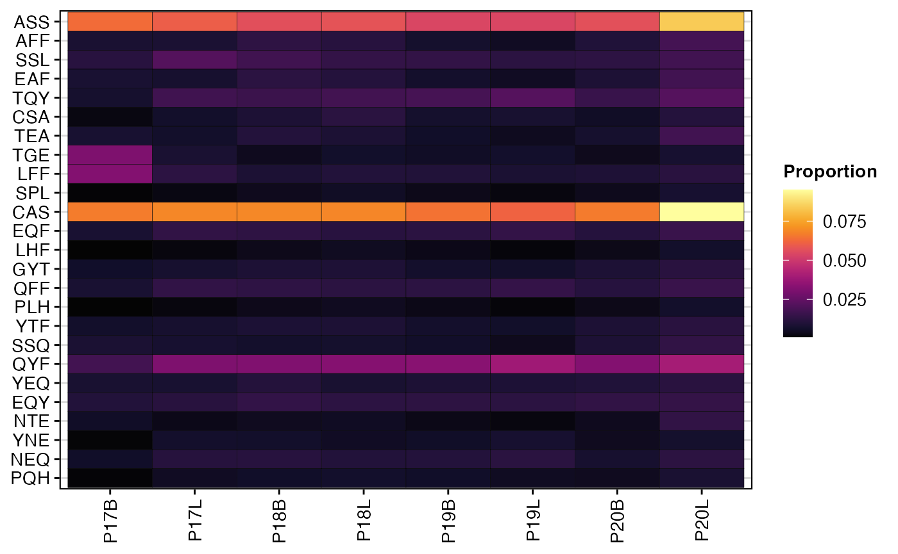
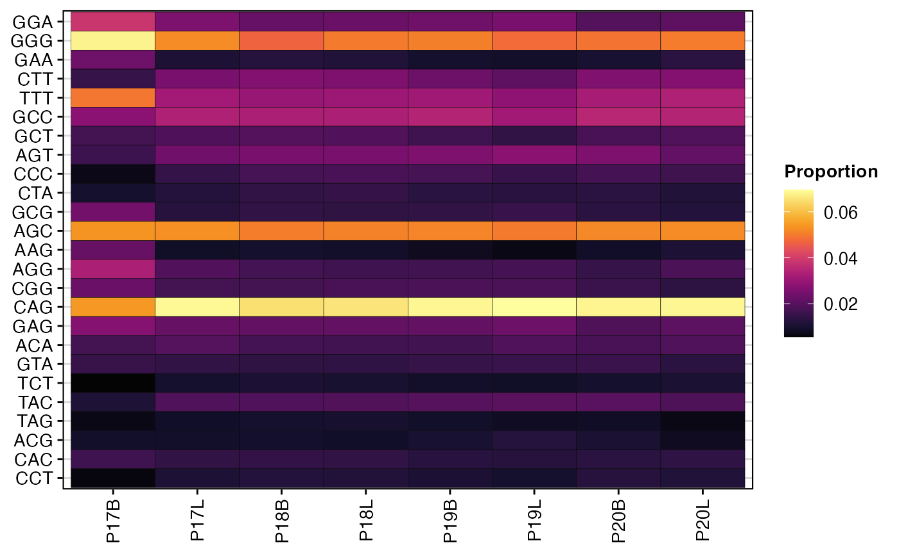

Summarizing Repertoires
Compiled: October 17, 2025
Source:vignettes/articles/Repertoire_Summary.Rmd
Repertoire_Summary.RmdpercentAA
Quantify the proportion of amino acids along the CDR3 sequence with
percentAA(). By default, the function will pad the
sequences with NAs up to the maximum of aa.length.
Sequences longer than aa.length will be removed before visualization
(default aa.length = 20).
Key Parameter(s) for percentAA()
-
aa.length: The maximum length of the CDR3 amino acid sequence to consider.
To visualize the relative percentage of amino acids at each position of the CDR3 sequences for the TRB chain, up to a length of 20 amino acids:
percentAA(combined.TCR,
chain = "TRB",
aa.length = 20)
This plot displays the relative proportion of each amino acid at different positions across the CDR3 sequence for the specified chain. It provides insights into the amino acid composition and variability at each residue, which can be indicative of functional constraints or selection pressures on the CDR3
positionalEntropy
We can also quantify the level of entropy/diversity across amino acid
residues along the CDR3 sequence. positionalEntropy()
combines the quantification by residue of percentAA() with
diversity calculations. Positions without variance will have a value
reported as 0 for the purposes of comparison.
Key Parameter(s) for positionalEntropy()
-
method-
shannon- Shannon Index -
inv.simpson- Inverse Simpson Index -
gini.simpson- Gini-Simpson Index -
norm.entropy- Normalized Entropy -
pielou- Pielou’s Evenness -
hill1,hill2,hill3- Hill Numbers
-
To visualize the normalized entropy across amino acid residues for the TRB chain, up to a length of 20 amino acids:
positionalEntropy(combined.TCR,
chain = "TRB",
aa.length = 20)
The plot generated by positionalEntropy() illustrates
the diversity or entropy at each amino acid position within the CDR3
sequence. Higher entropy values indicate greater variability in amino
acid usage at that position, suggesting less selective pressure or more
promiscuous binding, while lower values suggest conserved positions
critical for structural integrity or antigen recognition.
positionalProperty
Like positionalEntropy(), we can also examine a series
of amino acid properties along the CDR3 sequences using
positionalProperty(). Important differences for
positionalProperty() is dropping NA values as they would
void the mean calculation and displaying a ribbon with the 95%
confidence interval surrounding the mean value for the selected
properties.
Key Parameter(s) for positionalEntropy()
-
method
To examine the Atchley factors of amino acids across the CDR3 sequence for the first two samples:
positionalProperty(combined.TCR[c(1,2)],
chain = "TRB",
aa.length = 20,
method = "atchleyFactors") +
scale_color_manual(values = hcl.colors(5, "inferno")[c(2,4)])
This function provides a detailed view of how physicochemical properties of amino acids change along the CDR3 sequence. By visualizing the mean property value and its confidence interval, one can identify positions with distinct characteristics or significant variations between groups, offering insights into structural and functional aspects of the CDR3.
percentGeneUsage
Gene quantification and visualization has been redesigned to offer a
more robust and translatable function under
percentGeneUsage(). We have maintained the functionality of
the previous functions for gene-level quantification under the aliases
vizGenes(), percentGenes(), and
percentVJ().
vizGenes: Flexible Gene Usage Visualization
The vizGenes() function offers a highly adaptable
approach to visualizing the relative usage of TCR or BCR genes. It acts
as a versatile alias for percentGeneUsage(), allowing for
comparisons across different chains, scaling of values, and selection
between bar charts and heatmaps.
-
x.axis: Specifies the gene segment to display along the x-axis (e.g., “TRBV”, “TRBD”, “IGKJ”). -
y.axis- Another gene segment (e.g., “TRAV”, “TRBJ”) for paired gene analysis. When x.axis and y.axis are both gene segments, vizGenes() internally calls percentGeneUsage() with genes = c(x.axis, y.axis), resulting in a heatmap.
- A categorical variable (e.g., “sample”, “orig.ident”) to visualize gene usage across different groups. When y.axis is a categorical variable, vizGenes() maps it to the group.by parameter of percentGeneUsage(), creating facets for each category.
-
plot: Determines the visualization type:- “barplot”: Ideal for visualizing the distribution of a single gene segment.
- “heatmap”: Suitable for single gene usage (with a group.by or y.axis categorical variable) or for paired gene analysis.
-
summary.fun: (Inherited frompercentGeneUsage) Defines the statistic to display: “percent” (default), “proportion”, or “count”. This implicitly handles the scaling of values.
vizGenes(combined.TCR,
x.axis = "TRBV",
y.axis = NULL, # No specific y-axis variable, will group all samples
plot = "barplot",
summary.fun = "proportion") 
This plot shows the proportion of each TRBV gene segment
observed across the entire combined.TCR dataset. Since
y.axis is NULL, samples are grouped by the list element of
the combined.TCR data.
vizGenes() is particularly useful for examining gene
pairings. Let’s look at the differences in TRBV and
TRBJ usage between peripheral blood and lung samples from your
dataset. We’ll subset combined.TCR for this analysis.
# Peripheral Blood Samples
vizGenes(combined.TCR[c("P17B", "P18B", "P19B", "P20B")],
x.axis = "TRBV",
y.axis = "TRBJ",
plot = "heatmap",
summary.fun = "percent") # Display percentages
# Lung Samples
vizGenes(combined.TCR[c("P17L", "P18L", "P19L", "P20L")],
x.axis = "TRBV",
y.axis = "TRBJ",
plot = "heatmap",
summary.fun = "percent") # Display percentages
In these examples, by providing both x.axis and
y.axis as gene segments (“TRBV” and “TRBJ”),
vizGenes() automatically performs a paired gene analysis,
generating a heatmap where the intensity reflects the percentage of each
V-J pairing.
Beyond V-J pairings within a single chain, vizGenes()
can also visualize gene usage across different chains. For instance, to
examine TRBV and TRAV pairings for patient P17’s
samples:
vizGenes(combined.TCR[c("P17B", "P17L")],
x.axis = "TRBV",
y.axis = "TRAV",
plot = "heatmap",
summary.fun = "count") 
percentGenes: Quantifying Single Gene Usage
The percentGenes() function is a specialized alias for
percentGeneUsage() designed to quantify the usage of a
single V, D, or J gene locus for a specified immune receptor chain. By
default, it returns a heatmap visualization.
Key Parameters for percentGenes():
-
chain: Specifies the immune receptor chain (e.g., “TRB”, “TRA”, “IGH”, “IGL”). -
gene: Indicates the gene locus to quantify: “Vgene”, “Dgene”, or “Jgene”. -
group.by,order.by,summary.fun,exportTable,palette: These parameters are directly passed topercentGeneUsage().
To quantify and visualize the percentage of TRBV gene usage across your samples:
percentGenes(combined.TCR,
chain = "TRB",
gene = "Vgene",
summary.fun = "percent")
This generates a heatmap showing the percentage of each TRBV gene segment within each sample, allowing for easy visual comparison of gene usage profiles across your samples.
The raw data returned by percentGenes() (when
exportTable = TRUE) can be a powerful input for further
downstream analysis, such as dimensionality reduction techniques like
Principal Component Analysis. This allows you to summarize the complex
gene usage patterns and identify samples with similar or distinct
repertoires.
df.genes <- percentGenes(combined.TCR,
chain = "TRB",
gene = "Vgene",
exportTable = TRUE,
summary.fun = "proportion")
# Performing PCA on the gene usage matrix
pc <- prcomp(t(df.genes))
# Getting data frame to plot from
df_plot <- as.data.frame(cbind(pc$x[,1:2], colnames(df.genes)))
colnames(df_plot) <- c("PC1", "PC2", "Sample")
df_plot$PC1 <- as.numeric(df_plot$PC1)
df_plot$PC2 <- as.numeric(df_plot$PC2)
ggplot(df_plot, aes(x = PC1, y = PC2)) +
geom_point(aes(fill = Sample), shape = 21, size = 5) +
guides(fill=guide_legend(title="Samples")) +
scale_fill_manual(values = hcl.colors(nrow(df_plot), "inferno")) +
theme_classic() +
labs(title = "PCA of TRBV Gene Usage")
This PCA plot visually clusters samples based on their TRBV gene usage profiles, helping to identify underlying patterns or relationships between samples.
percentVJ: Quantifying V-J Gene Pairings
The percentVJ() function is another specialized alias
for percentGeneUsage(), specifically designed to quantify
the proportion or percentage of V and J gene segments paired together
within individual repertoires. It always produces a heatmap
visualization.
Key Parameters for percenVJ():
-
chain: Specifies the immune receptor chain (e.g., “TRB”, “TRA”, “IGH”, “IGL”). This dictates which V and J gene segments are analyzed (e.g., TRBV and TRBJ forchain= “TRB”)
percentVJ(combined.TCR[1:2],
chain = "TRB",
summary.fun = "percent")
This heatmap displays the percentage of each TRBV-TRBJ pairing for each sample, providing a detailed view of the V-J recombination landscape.
Similar to percentGenes(), the quantitative output of
percentVJ() can be used for dimensionality reduction to
summarize V-J pairing patterns across samples.
df.vj <- percentVJ(combined.TCR,
chain = "TRB",
exportTable = TRUE,
summary.fun = "proportion") # Export proportions for PCA
# Performing PCA on the V-J pairing matrix
pc.vj <- prcomp(t(df.vj))
# Getting data frame to plot from
df_plot_vj <- as.data.frame(cbind(pc.vj$x[,1:2], colnames(df.vj)))
colnames(df_plot_vj) <- c("PC1", "PC2", "Sample")
df_plot_vj$PC1 <- as.numeric(df_plot_vj$PC1)
df_plot_vj$PC2 <- as.numeric(df_plot_vj$PC2)
# Plotting the PCA results
ggplot(df_plot_vj, aes(x = PC1, y = PC2)) +
geom_point(aes(fill = Sample), shape = 21, size = 5) +
guides(fill=guide_legend(title="Samples")) +
scale_fill_manual(values = hcl.colors(nrow(df_plot_vj), "inferno")) +
theme_classic() +
labs(title = "PCA of TRBV-TRBJ Gene Pairings")
percentKmer
Another quantification of the composition of the CDR3 sequence is to define motifs by sliding across the amino acid or nucleotide sequences at set intervals, resulting in substrings or kmers.
Key Parameter(s) for percentKmer():
-
cloneCall: Defines the clonal sequence grouping; only acceptsaa(amino acids) ornt(nucleotides) -
motif.length: The length of the kmer to analyze. -
top.motifs: Displays the n most variable motifs as a function of median absolute deviation.
To visualize the percentage of the top 25 most variable 3-mer amino acid motifs for the TRB chain:
percentKmer(combined.TCR,
cloneCall = "aa",
chain = "TRB",
motif.length = 3,
top.motifs = 25)
To perform the same analysis but for nucleotide motifs:
percentKmer(combined.TCR,
cloneCall = "nt",
chain = "TRB",
motif.length = 3,
top.motifs = 25)
The heatmaps generated by percentKmer() illustrate the
relative composition of frequently occurring k-mer motifs across samples
or groups. This analysis can highlight recurrent sequence patterns in
the CDR3, which may be associated with specific antigen recognition,
disease states, or processing mechanisms. By examining the most variable
motifs, researchers can identify key sequence features that
differentiate immune repertoires.